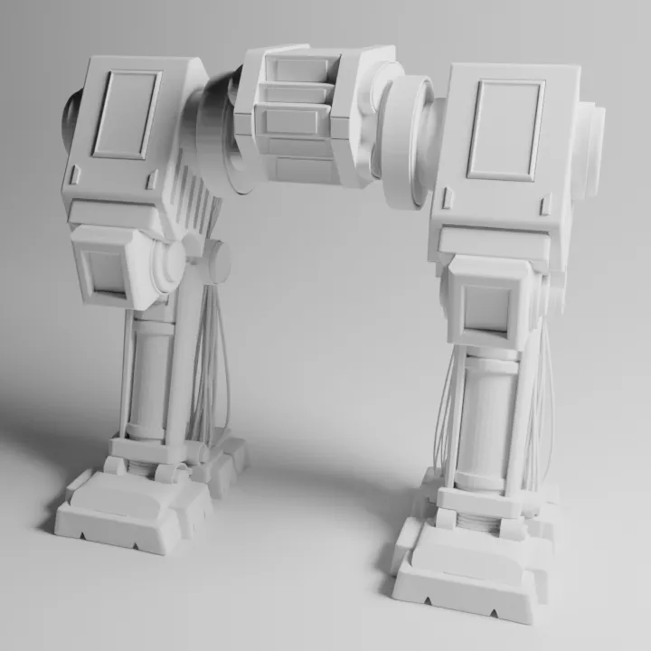
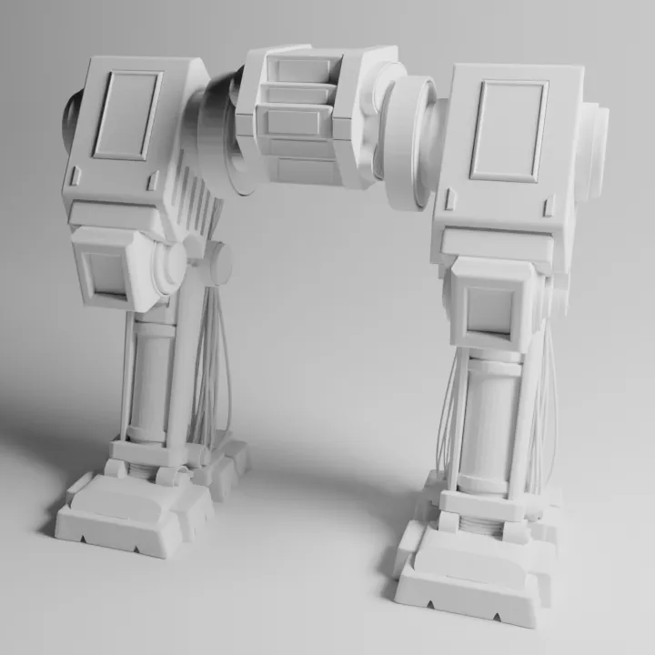
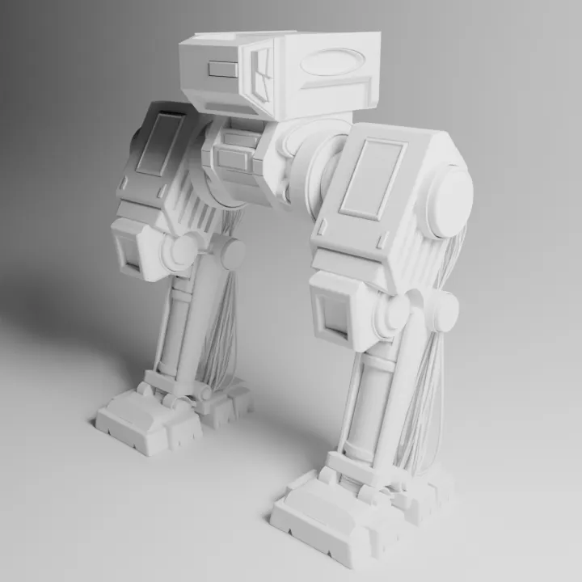
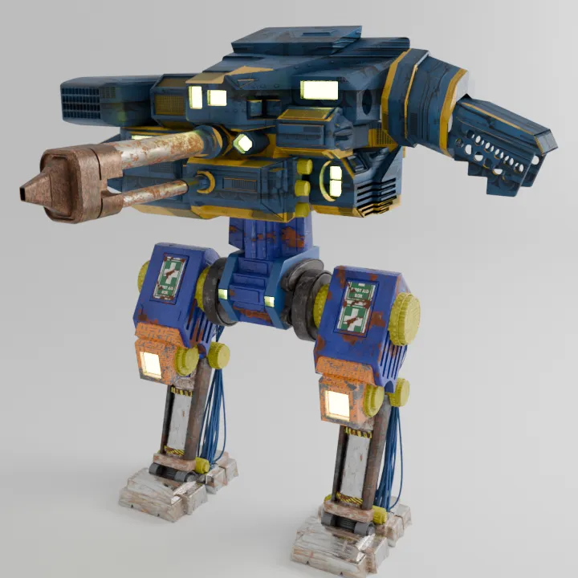

Intro
This project is a mech robot study focused on clean hard surface modeling and believable mechanical joints. I wanted to practice building leg structures, cable routing, and the blockout for a functional upper body. The whole idea was to treat this like a technical sculpting exercise and see how far I could push the forms before committing to a final design.
 

Once the legs felt stable and readable, I moved to the pelvis area. This part determines how the upper and lower halves connect, so I kept it simple and focused on function.
Upper Body Progression
Building the upper body was slower. I tried multiple shapes to find something that looked strong but still clean. Most of this stage was about testing silhouettes and refining the mechanical logic.
After enough refinement, I combined everything into one clay model to check the overall proportions.

Final Renders
The final version keeps the same rough structure from the clay pass but cleans up the surfacing. I softened some bevels, adjusted cable placement, and added more defined breaks between armor plates.
